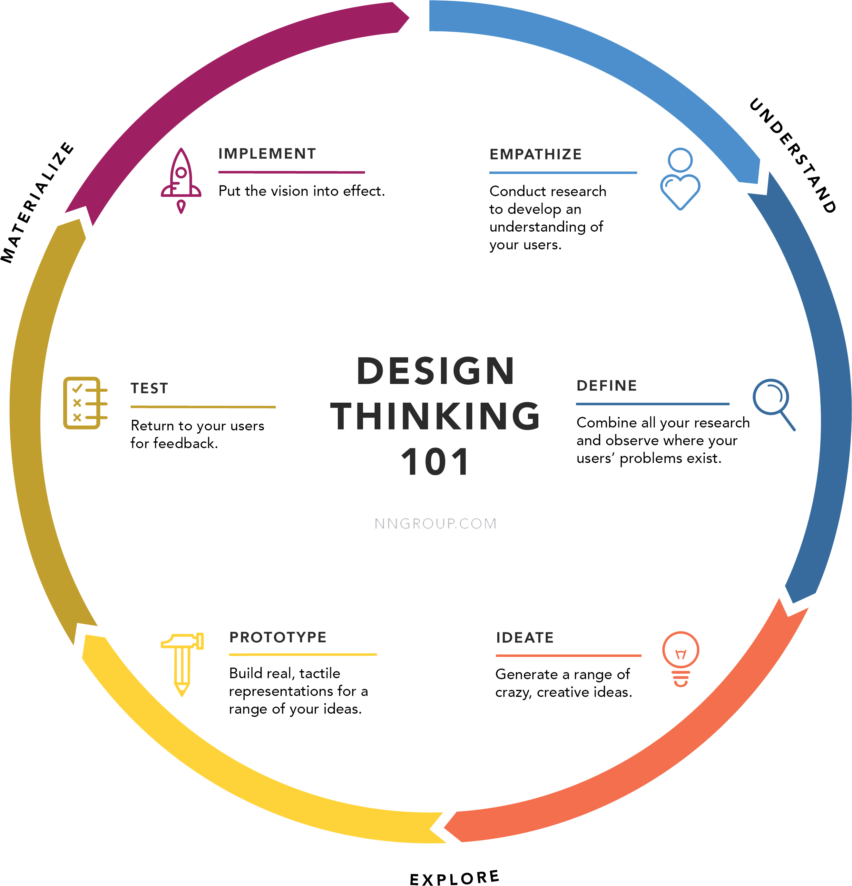

"designing interactive products to support the way people communicate and interact in their everyday and working lives" (Rogers, Sharp, & Preece, 2011)
"the practice of designing interactive digital products, environments, systems, and services." It is "the design of behavior" (Cooper, Reimann, & Cronin, 2007).
single user interaction | mutipule users' interaction
why is interaction design important
user-centred design and goal-centered design
The practice of “interaction design” grew from the need to present software experiences to users in a way that makes sense, meets their needs, is consistent and coherent and “usable” and ultimately desirable.
---McCoy, 2009
have you had
a TV remote that didn’t make sense?
a doorknob that was terrible to use?
an app that you had no idea how to get started?
who do interaction design
image source: Santa Monica College, 2018
where can you find interaction design
place your design here
when to use interaction design
users' needs
USES AND GRATIFICATIONS APPROACH
users' want
Technology acceptance model
Accessibility/mobility
Relaxation
Escape
Entertainment
Information seeking
Coordination for business
Socialization/affection seeking
Status seeking (Leung & Wei, 2000)
Companionship (Chen, 2018)
ease of use
usefulness (Davis, 1989)
how to design interaction

design thinking (Gibbons, 2016)
Empathize: Conduct research in order to develop knowledge
Define: Combine all your research and observe where your users’ problems exist.
Ideate: Brainstorm a range of crazy, creative ideas that address the unmet user needs identified in the define phase.
Prototype: Build real, tactile representations for a subset of your ideas.
Test: Return to your users for feedback.
Implement: Put the vision into effect.
skills to learn:
Card Sorting, Contextual Interview, First Click Testing, Focus Groups, Heuristic Evaluations and Expert Reviews, Individual Interviews, Parallel Design, Personas, Prototyping, Surveys, System Usability Scale (SUS), Task Analysis, Usability Testing, Use Cases, Eye Tracking, A/B Testing, Tree Tests
Prototype Design
and much more...
come
and
join
us
Design the Future
thank you
References
Cooper, A., Reimann, R., & Cronin, D. (2007). About face 3: the essentials of interaction design. John Wiley & Sons.
Davis, F. D. (1989), "Perceived usefulness, perceived ease of use, and user acceptance of information technology", MIS Quarterly, 13 (3): 319–340, doi:10.2307/249008
Gibbons, S. (2016). Design thinking 101. Nielsen Norman Group. Retrieved from https://www.nngroup.com/articles/design-thinking/
Leung, L. & Wei, R. (2000). More than just talk on the move: Uses and Gratifications of the Cellular Phone. Journalism & Mass Communication Quarterly, 77(2), 308-320. doi: 10.1177/107769900007700206
Rogers, Y., Sharp, H., & Preece, J. (2011). Interaction design: Beyond human-computer interaction. John Wiley & Sons.
McCoy, T. (2009).Is Interaction Design a dead-end job? Cooper. Retrieved from https://www.cooper.com/journal/2009/4/is_ixd_a_dead_end_job
image sources
please check the source code to find the authors/copyright holders' links


{kind=link}